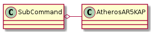

This module holds the sub-commands for the Arguments (methods that it will call).
Since this is a user-level class (it is part of the command-line interface), exceptions are caught and logged, rather than allowing the interpreter to dump the stack-trace (it still logs and displays the stack-trace). To make this simpler a decorator is used to catch Exception.
try_except(func) |
A decorator method to catch Exceptions |
Role: Holds the sub-commands for the Arguments (the methods to actually call base on what the user passed in).
Collaborators:
- AtherosAR5KAP

SubCommand() |
A holder of sub-commands |
SubCommand.access_point(args) |
The Access point controller |
SubCommand.up(*args, **kwargs) |
|
SubCommand.down(*args, **kwargs) |
|
SubCommand.destroy(*args, **kwargs) |
|
SubCommand.status(*args, **kwargs) |
|
SubCommand.reset(*args, **kwargs) |
|
SubCommand.channel(*args, **kwargs) |
|
SubCommand.ssid(*args, **kwargs) |
|
SubCommand.security(*args, **kwargs) |
|
SubCommand.command(*args, **kwargs) |
|
SubCommand.ipaddress(*args, **kwargs) |
The sub-command is largely ignorant of what the objects it holds does so this is mainly to check that the methods exist and if called will catch exceptions.
TestSubCommand.test_up() |
Does it have the up-method and will it catch exception? |
TestSubCommand.test_down() |
Does it have the down-method and will it catch exception? |
TestSubCommand.test_destroy() |
Does it have a method to destroy a (virtual) interface? |
TestSubCommand.test_args() |
Does the correct set of arguments get passed to the ap |
TestSubCommand.test_status() |
Does the sub-command call the ap’s status method? |
TestSubCommand.test_security() |
Does the set_security method get called correctly? |